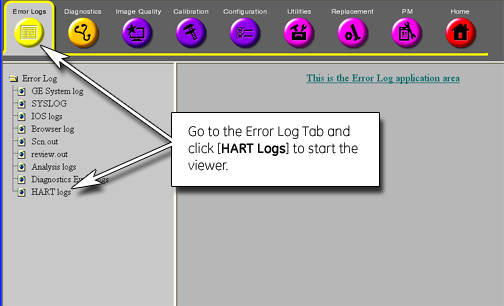

Proprietary to General Electric
Direction 5500113, Rev# 3
Discovery MR750 3.0T Service Methods
Module Version 4.0, Version Date 8/19/08
Proprietary to General Electric |
| Required Persons | Preliminary Reqs | Procedure | Finalization |
|---|---|---|---|
| 1 | Not Applicable | Not Applicable | Not Applicable |
The Hardware Tracker (HART) is a service tool used to view the hardware configuration of the components in the MR750 system. HART gives information about the current status of the components and it can also track and report board replacements. HART generates two logs: the Current Status Log, which is Class A, and the History Log, which is Class C.
Select a link below to go directly to that section.
On boot up, if a HART log file is not present, either Current or History, HART creates a new log file.
The HART logger detects changes to the hardware configuration with reference to the contents of the current status file.
When a HART log file grows to a size of 3 MB, a backup is made. Any existing backup is overwritten.
After a backup for a HART log file is made, a fresh log file is started.
HART log files are kept encrypted in the system.
Log files are saved on the Save/Restore Info MOD.
On the host computer, open the Service Browser.
In the Common Service Desktop, select the [Error Logs] tab. Follow the instructions on Illustration 1 below.
Illustration 1: Starting the HART Viewer

Clicking the HART logs link opens the HART log selection page.
Illustration 2: HART Start Page

There are three available choices:
HART Current Status log
HART History log
HART History log Backup
The HART Current Status log displays the current hardware configuration in all the components in the system equipped with HART. During every system reboot and TPS Reset, HART queries an ID chip on the boards. The results of this query are displayed in the current HART log. This gives the HART log information about each board’s InstallDate, BoardType, BoardLocation, BoardRevision, FirmwareRevision, SerialNumber, CurrentDateTime, and PowerOnDiagResults (power-on diagnostic results). See Table 1 and Illustration 3 for a breakdown of the information in the HART log.
Table 1: HART Log Field Definitions
| FIELD | DEFINITION |
| Install Date (InstallDate) | The first time a board is installed and a TPS reset occurs, the date is stored in this field. |
| Board Type (BoardType) | Board name or acronym |
| Board Location (BoardLocation) | Board slot number. Note that daughter boards have the same slot number, but a letter designation. |
| Board Revision (BoardRevision) | The revision of the board |
| Firmware Revision (FirmwareRevision) | The firmware revision, if any |
| Serial Number (SerialNumber) | The unique serial number given by the ID chip. This number does NOT match the bar code serial number on the board. |
| Current Date / Time (CurrentDateTime) | The date and time you access the HART Log program |
| Power On Diag Results (PowerOnDiagResults) | Whether or not the program was successful in reading the serial number of the board. |
| NOTE: | If a board does not have information available via the ID chip, one or more of the fields may be empty. |
Illustration 3 shows an example of a HART Current Status log.
Illustration 3: Partial HART Example Current Status Output

The HART History Log displays a history of board replacements within the system. The history file is created when the Current HART Log is created. At first-time startup, the history log content should match the current log.
If a board is replaced or fails in such a way that HART cannot read the ID chip, an entry is added to the History log indicating that either a different board is installed or a board is missing. The HART History file is triggered after querying the hardware. It compares the values to the current log. A change is flagged if it detects a change in the board serial number, revision number or firmware revision. In this case, a new row is created with the replacement board name, etc., but also the old serial number and the new serial number. In addition, a user can leave comments in history log entries. This feature is intended to be used by service to document the cause for events.
The HART History Log is useful in the following cases:
During troubleshooting, it detects a change from its previous configuration
Where there have been intermittent errors and board replacements, it helps remind or inform other site FE’s who might be troubleshooting the system
It assists the On-Line Center or on-site engineers in remotely detecting changes
Pro-Diags can retrieve history files and flag high-failure-rate board information and provide feedback to Engineering
Illustration 4: Example History Log Output

Illustration 5: Comment Entry Form

No finalization steps.